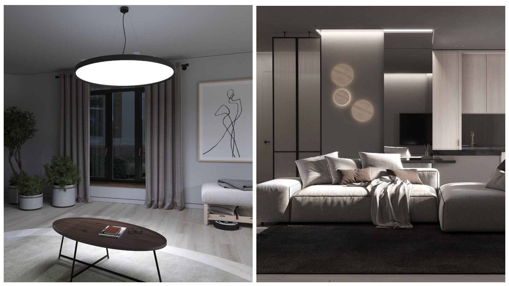
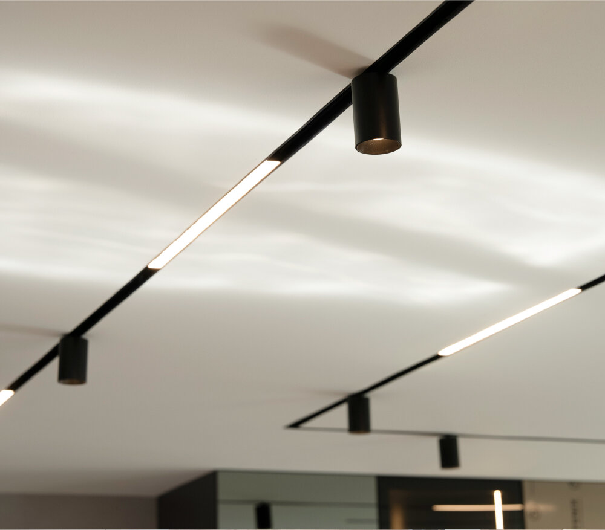

Семь ошибок в освещении квартиры и как их избежать
Даже дорогой интерьер может выглядеть невыразительно, если свет выбран без учёта планировки, назначения зон и особенностей помещения. Причина обычно не в дизайне светильников, а в неправильной организации освещения.

Рассмотрим семь распространённых ошибок.
Ошибка 1. Одна люстра на всю комнату
Один центральный светильник часто создаёт яркую зону в центре и оставляет тёмными углы, рабочие поверхности и пространство рядом со стенами.
Такой свет делает интерьер плоским и не позволяет менять атмосферу комнаты.
Лучше использовать несколько уровней:
-
общий потолочный свет;
-
локальное освещение отдельных зон;
-
акцентный свет;
-
декоративную подсветку.
В гостиной это может быть сочетание встраиваемых светильников, настенных моделей и подвеса над столом.
Ошибка 2. Неподходящая цветовая температура
Слишком холодный свет может сделать жилой интерьер неуютным, а слишком тёплый — снизить визуальную чёткость в рабочей зоне.
Для спальни и гостиной часто выбирают 2700–3000К. Для кухни, кабинета и рабочего места можно использовать 3000–4000К.
Не стоит смешивать разные температуры в одной небольшой зоне без понятной причины. Например, тёплая подсветка мебели и холодный потолочный свет могут создавать ощущение несогласованности.
Ошибка 3. Отсутствие сценариев
Одинаковый свет редко подходит для уборки, работы, отдыха, просмотра фильма и приёма гостей.
Предусмотрите независимое включение разных групп:
-
основного света;
-
подсветки рабочей зоны;
-
настенных светильников;
-
декоративной подсветки;
-
трековых или направленных моделей.
Дополнительную гибкость даёт диммирование — возможность изменять яркость.
Ошибка 4. Игнорирование рабочих поверхностей
Даже яркий потолочный свет может не освещать столешницу, письменный стол или зеркало. Человек закрывает свет собой, и на поверхности появляется тень.
На кухне нужна отдельная подсветка столешницы. Для рабочего стола необходим локальный свет. Рядом с зеркалом важно равномерно освещать лицо без резких теней.

Ошибка 5. Слепящие светильники
Если источник света находится прямо в поле зрения, он может создавать визуальный дискомфорт.
Это особенно заметно:
-
над диваном;
-
рядом с кроватью;
-
в коридоре;
-
над обеденным столом;
-
при низком потолке.
Снизить дискомфорт помогают глубокая посадка источника, антибликовые элементы, правильно выбранный угол и точное направление светового потока.
Ошибка 6. Неправильная высота установки
Подвес, установленный слишком низко, мешает передвижению и перекрывает обзор. Если поднять его слишком высоко, свет может перестать выполнять локальную задачу.
Высота зависит от назначения зоны. Над столом светильник можно опустить ниже, чем в проходе. В открытом пространстве необходимо учитывать рост людей и высоту потолка.
Ошибка 7. Выбор только по цене или внешнему виду
Красивый корпус не гарантирует подходящий свет. Перед покупкой нужно проверить:
-
световой поток;
-
цветовую температуру;
-
индекс цветопередачи;
-
угол рассеивания;
-
тип управления;
-
совместимость с драйвером;
-
условия монтажа;
-
гарантию.
Слишком дешёвая комплектация может потребовать замены отдельных компонентов или создать сложности при установке.
Как избежать ошибок
Составьте план помещения и отметьте:
-
основные зоны;
-
рабочие поверхности;
-
места отдыха;
-
элементы, которые нужно выделить;
-
группы независимого включения;
-
тип потолка;
-
расположение питания.
Краткий вывод
Освещение лучше выбирать как систему, а не как набор отдельных красивых светильников. Тогда интерьер будет выглядеть цельно, а светом будет удобно пользоваться каждый день.